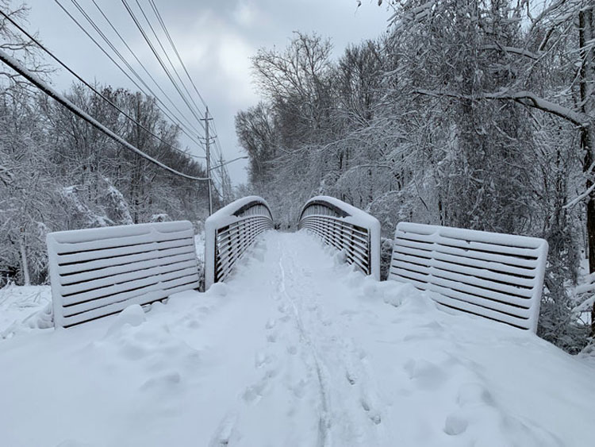

By Nolan Clancy
May 1, 2022
The city of College Park’s emphasis on green transportation infrastructure is easy to see today.
The Paint Branch Trail runs 3.5 miles from Route 495 through the center of College Park, under Route 1, all the way to neighboring Riverdale Park.
The Rhode Island Avenue Trolley Trail runs 3.8 miles north-south through eight neighborhoods, passing numerous grocery stores, restaurants, train stations and public parks along the way.
Lake Artemisia is a 38-acre man-made body of water surrounded by miles of paved trails for learning, recreation and exercise, in addition to multiple offshoots that make for easy connectivity to neighboring towns.
A bridge on the Rhode Island Avenue Trolley Trail under a blanket of snow, Jan. 2022. (Photo/Nolan Clancy)
The extensive interconnected trail system in the relatively small town functions as a backbone for the city, connecting residents and commuters to places they need to be. But it wasn’t always this way.
“When I first came to graduate school here at the University of Maryland in 1992, it was very car oriented,” said Eric Olson, a former College Park City Council member who served from 1997 to 2006. He had a vision for the city that was much different.
Throughout his two terms in office, Olson helped lead $450 million in redevelopment projects, all geared toward community connectivity, according to the College Park City-University Partnership, an organization Olson now leads as executive director.
Today, the interconnected trail system is a major draw for the college town, attracting students and young families alike to the area.
“We’ve made our whole area much more walkable and bikeable. And those are things that took tremendous effort,” Olson said.
The efforts have earned the city a 66 out of 100 walkability score on Walkscore.com, a service that quantifies a town’s accessibility based on the ease of getting to categories including dining, groceries, parks and shopping without a car. With the same categories, the town earned a bikeability score on the website of 94 out of 100.
The paved path runs roughly parallel to Route 1 through the center of town, providing an escape from the busy four-lane roadway for walkers and bikers.
For students and faculty commuting to and from the University of Maryland, the trail provides a safe bike route with access to the Cherry Hill, Lakeland and College Park Woods neighborhoods, as well as downtown infrastructure and grocery stores.
But the trail is far from a finished product. College Park Mayor Patrick Wojahn’s day job as Director of Government Relations for the Rails to Trails Conservancy group gives him specific experience with what it takes to make trail accessibility a reality.
“We’re hoping to do something to really turn the Paint Branch Trail, as it goes west of Route 1 up towards campus and Cherry Hill, into more of a riverwalk,” Wojahn said. He said the city hopes to prioritize “highlighting the benefit of the river and utilizing that to promote high quality development along the trail.”
The paved trail connects the neighborhoods of Hollywood, Daniels Park, Oak Springs, Branchville, Berwyn, Lakeland, Old Town and Calvert Hills, all lying east of Route 1.
The trail is adapted from a portion of Washington’s City and Suburban Railway, originally built in 1899.
Where railcars once carried passengers downtown, today a path runs through neighborhood streets surrounded by public greenspace on either side.
Wojahn credits Olson as a driving force behind the development of the trolley trail, which was officially completed to its current state in 2017.
“I think of the trolley trail, honestly, as sort of our public town green, it’s the place where people come together,” Olson said. “When you’re out and about and you’re walking, you see more people.”
Walkers and bikers can take a short trip north or south when looking to access downtown College Park, the metro station and connecting trails to Lake Artemisia.
The trail also runs through The Station at Riverdale Park, a growing mixed-use development that includes housing, a Whole Foods Market and numerous restaurants.
The man-made lake lies a quarter mile east of the Rhode Island Avenue Trolley Trail, and gives College Park residents their largest public greenspace.
Constructed in the late 1980’s as a byproduct of soil removed for the metro’s Green Line, the land was once home to about one third of the Lakeland community’s residents, according to the Lakeland Community Heritage Project.
Today, path offshoots connect College Park to neighboring Berwyn Heights, Riverdale and Greenbelt, farther expanding the city’s commutable network of trails.